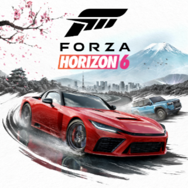
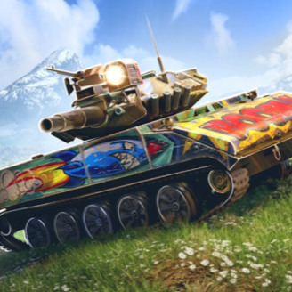

Forza Horizon 6
Forza Horizon 6 is an open‑world racing game built around exploring a huge map, collecting cars, and jumping into events whenever you feel like it. The series is known for being more relaxed and playful than traditional racing sims, and FH6 continues that style with a mix of street races, off‑road routes, and casual challenges scattered across the world. It’s the kind of game where you can spend one moment tuning a car and the next moment drifting around a mountain road just because it looks fun. The focus is on freedom, variety, and driving whatever you want, wherever you want.

World of Tanks Blitz
World of Tanks Blitz is a fast, match‑based tank game where positioning and timing matter just as much as accuracy. Each battle is a short 7v7 fight, and you pick from a wide range of tanks that all play differently — some are slow and heavily armored, others are quick scouts, and some are long‑range snipers. The game rewards learning maps, understanding weak spots, and choosing the right moment to push or retreat. It’s easy to jump into for a quick match, but there’s enough depth to keep you experimenting with different tanks and strategies.
